Chapter 3
library(dplyr)
library(ggplot2)
library(rstan)
library(tidyr)
rstan_options(auto_write = TRUE)
options(mc.cores = parallel::detectCores())
# Functions
source("R/simulate_data.R")
source("R/calc_sim_incidence.R")
source("R/draw_init_values.R")
source("R/run_stan_models.R")
source("R/diagnose_stan_fit.R")
source("R/plot_model_fit.R")
source("R/compare_param_est.R")
# Models
m2_EU1 = stan_model("models/model2_Euler_V1.stan")
m2_EU2 = stan_model("models/model2_Euler_V2.stan")
A multivariant model
In this chapter, we are going to fit a multivariate model to capture the dynamics of both the Delta and Omicron VOC's in Gauteng. This means fitting to the incidence data observed during the third wave, driven by Delta, and the fourth wave, driven by Omicron. We will assume that between July 2021 - October 2021 the incidence data is Delta, whilst between October 2021 and December 2021 the incidence data is Omicron ^. As before, we will seed both variants 1 month before fitting to the data. That means we seed Delta in May and we seed Omicron in September.
^Note that these dates are not quite in line with the observed waves in Gauteng. In order to reduce memory usage and the time taken to fit the models in Stan we have assumed shorter waves and a reduce time period over which to model.
The flow diagram of the multivariate model is shown in the following figure:
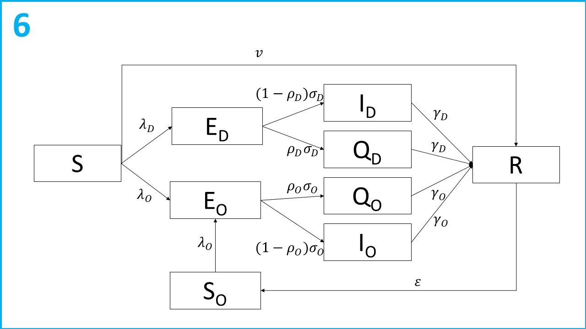
Let subscript refer to the virus variant ( = Delta, = Omicron). Susceptible individuals ( compartment) are infected at rate . Following infection individuals are latent with the virus ( compartments) for an average of c days. After incubating the virus, a proportion of individuals are detected, reported and enter isolation ( compartments). The remaining proportion become infectious ( compartments) and contribute to the transmission of SARS-CoV-2. The infectious period lasts on average days, and then individuals recover and test negative ( compartment). Susceptible individuals are also vaccinated and enter the R compartment directly at rate . Once recovered, immunity to the Omicron variant wanes at a rate of ( compartment) and individuals are infected at a rate of .
Initial conditions
As before, we will assume a single infectious individual seeds both the Delta and Omicron variants. We need redefine the number of recovered individuals, as we are now looking prior to the third wave. A sero-suvery in Gauteng reported a seroprevalence of 19% in at the end of January 2021 [1], so we will assume that and . We will assume that the , and compartments are all 0 at .
Model parameters
As before, we will fix and using estimates from the literature, but we will assume they are variant-specific. For Omicron these we assume an average latent period of 3.03 days [2] and an average infectious period of 4.17 days [3]. FOr Delta, we will assume an average latent period 4.3 days [4] and an infectious period an average infectious period of 2.9 days [3].
We are also going to fix the rate of vaccination, assuming a constant per capita rate of vaccination of .
We are going to estimate the variant-specific transmission rates , the variant-specific reporting probability, and the rate of immune waning .
Q1: Why might we want to assume a variant specific reporting probability?
During the third wave, driven by Delta, interventions were introduced across South Africa between 15-06-21 and 13-09-2021. We will use our model to also estimate the impact of these interventions on transmission. Let be the percentage reduction in transmission due to interventions. We model this impact on transmission as follows:
Finally, we are also going to estimate the over-dispersion parameter , introduced in the previous chapters.
Likelihood and priors
As before we are going to assume a beta prior for the reporting probabilities: , a normal distribution prior for the transmission rates: and an exponential distribution for the overdispersion parameter prior: .
As a starting point, lets say that we fairly certain a SARS-CoV-2 infection or vaccination provides immunity for a year, and assume the following prior: .
Q2: Given what we know about the impact of interventions on transmission, what prior should we assume for ?
Finally, we need to define our likelihood functions. As before, we assume that SARS-CoV-2 reported incidence is overdispersed and assume a Negative Binomial distribution:
Note, this time we have two likelihood functions, one for each variant. As before, we reconstruct the reported incidence from the model as the rate of entry into the Q compartment: . Including multiple likelihoods in Stan is easy, we just define them on separate lines and Stan will sum them automatically to calculate the overall model likelihood.
Assumptions
- No pre-symptomatic transmission.
- All reported incidence is dichotomously assumed to be either the Delta or Omicron variants, with no over variants in circulation.
- All tested individuals isolate with 100% compliance.
Simulating multivariant data
Defining key dates:
# Date we start fitting the incidence to Delta
date_fit_D = as.Date.character("01-06-2021", format = "%d-%m-%Y")
# Date we start fitting the incidence data to Omicron
date_fit_O = as.Date.character("01-10-2021", format = "%d-%m-%Y")
# Date we seed Delta (1 month before we fit)
date_seed_D = as.Date.character("01-05-2021", format = "%d-%m-%Y")
# Date we seed D (1 month before we fit)
date_seed_O = as.Date.character("01-09-2021", format = "%d-%m-%Y")
# Date interventions
date_int= as.Date.character(c("15-06-2021","13-09-2021"), format = "%d-%m-%Y")
# Final data of modelling period
end_date = as.Date.character("01-01-2022", format = "%d-%m-%Y")
# All dates of modelling period
all_dates_mv = seq.Date(from = date_seed_D, to = end_date , by = "days") # model times
As we are simulating data again, we need to define both the estimated and fixed parameters:
# Define variables
n_pop = 15810388 # Population
immunity_mv = 0.19 # Percentage of the population with immunity
n_inf_D = 1 # Initial Delta seed
n_inf_O = 1 # Initial Omicron seed
# Defining fixed parameters
gamma_O = 1/4.17 # Omicron recovery rate
gamma_D = 1/2.9 # Delta recovery rate
sigma_O = 1/3.03 # Omicron latent rate
sigma_D = 1/4.3 # Delta latent rate
nu = 0.002 # Vaccination rate
# Defining "unknown" parameters
R0_D = 5 # Delta reproduction number
R0_O = 8 # Omicron reproduction number
rho_D = 0.2 # Probability of reporting a Delta case
rho_O = 0.1 # Probability of reporting an Omicron case
epsilon = 1/180 # Rate of immune waning
omega = 0.65 # Percentage reduction in transmission due to interventions
beta_D = (R0_D * gamma_D) /(1-rho_D) # Delta transmission rate
beta_O = (R0_O * gamma_O) /(1-rho_O) # Omicron transmission rate
Like the function simulate_data_single_var in chapter 2, simulate_data_multi_var takes as input our model parameters, starting values and time steps. This time we also need to tell the model when to start and end interventions and when to seed the Omicron variant. The model equations are defined in models/model2_deSolve.R.
multi_var_sim_data = simulate_data_multi_var(
immunity = immunity_mv,
n_inf_D = n_inf_D,
n_inf_O = n_inf_O ,
rho_D = rho_D,
rho_O = rho_O,
beta_D =beta_D,
beta_O = beta_O,
epsilon = epsilon,
omega = omega,
nu = nu,
gamma_O = gamma_O,
gamma_D = gamma_D,
sigma_O = sigma_O,
sigma_D = sigma_D,
ts = 1:length(all_dates_mv),
time_int_start = which(all_dates_mv == date_int[1]),
time_int_end = which(all_dates_mv == date_int[2]),
time_seed_O = which(all_dates_mv == date_seed_O)
)
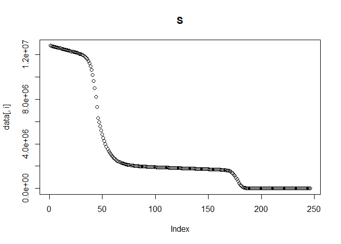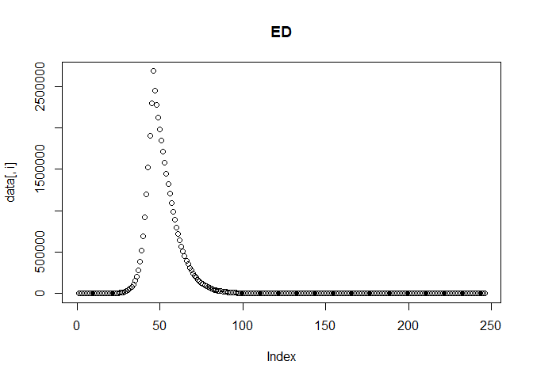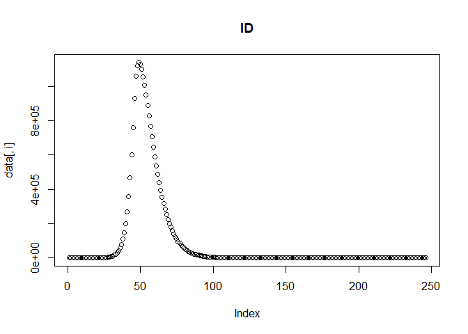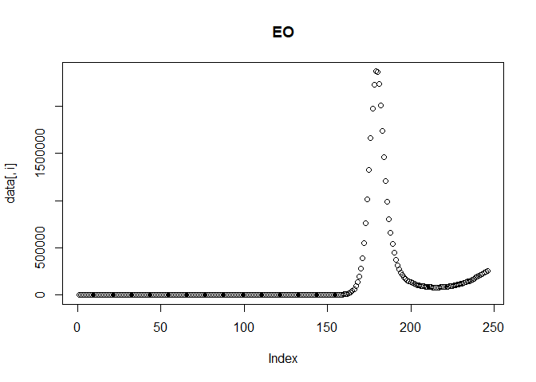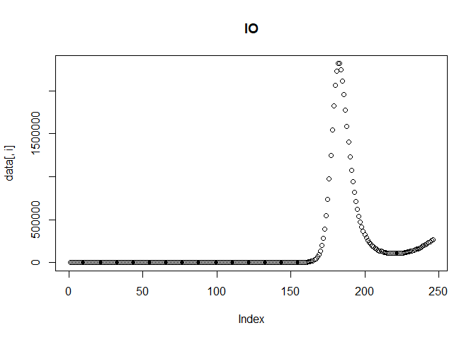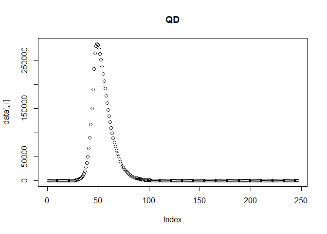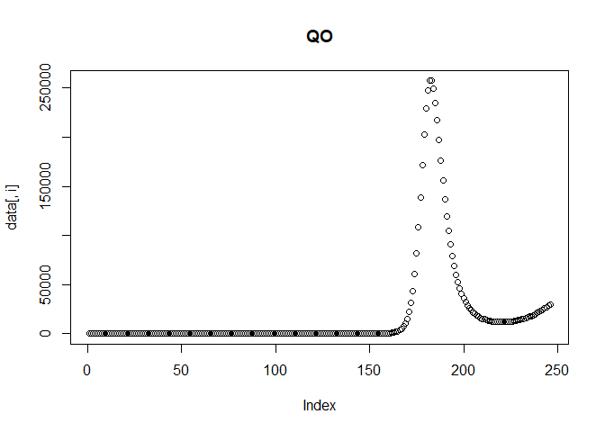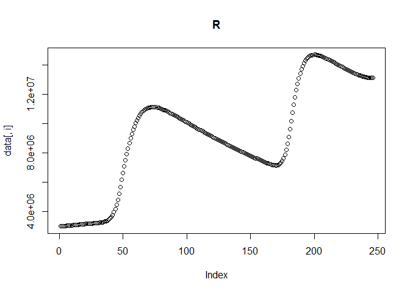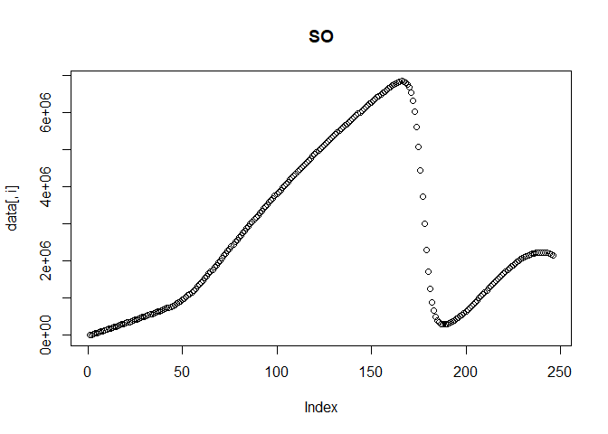
We can then plot the reported incidence with noise for the Delta and Omicron variants.
multi_var_sim_inc = calc_sim_incidence_multi_var(
ODE_data = multi_var_sim_data,
all_dates = all_dates_mv,
date_fit_D = date_fit_D,
date_fit_O = date_fit_O,
rho_D = rho_D,
rho_O = rho_O,
sigma_D = sigma_D,
sigma_O = sigma_O)
multi_var_sim_inc[[2]] # Plot
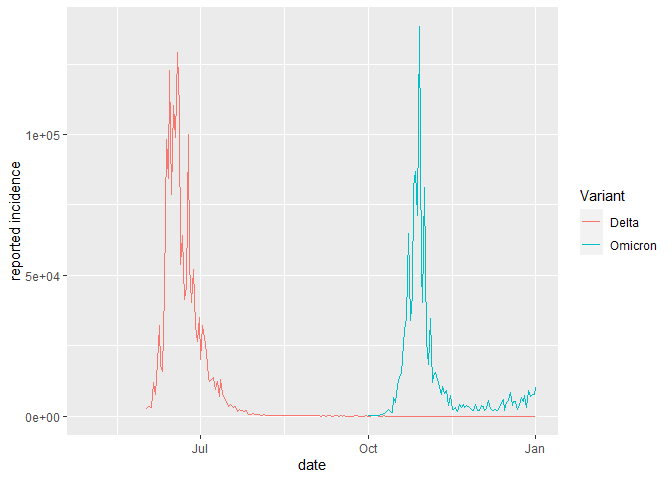
As we are assuming that incidence between July 2021 - October 2021 is Delta and that incidence between October 2021 and December 2021 is Omicron, all other data are "NA" which we need to discard:
# Removing missing data
y_D = multi_var_sim_inc[[1]]$rep_inc_D_noise[!is.na(multi_var_sim_inc[[1]]$rep_inc_D_noise)]
y_O = multi_var_sim_inc[[1]]$rep_inc_O_noise[!is.na(multi_var_sim_inc[[1]]$rep_inc_O_noise)]
Fitting the multivariant model in Stan
The multivariate SEIQRS model using Euler's method is coded up in model2_Euler_V1.stan, in the models folder. Spend some time looking over the model to check everything is clear. The variables for storing the outputs of the E, I, Q compartments are now 2D matrices, where the rows are the each time step at which we solve the model and the columns are the variants.
Once you are happy with the model, we can fit it to the data:
stan_fit_m2_EU1 = run_stan_models(
list_data =
list(
n_var = 2, # no. variants
n_ts = length(all_dates_mv), # no. time steps
n_pop = n_pop, # population
n_recov = round(immunity_mv*n_pop), # recovered population
I0 = c(n_inf_D, n_inf_O), # Seeds
y_D = y_D, # Delta reported incidence (data to fit to)
y_O = y_O, # Omicron reported incidence (data to fit to)
n_data_D = length(y_D), # no. data
n_data_O = length(y_O), # no. data
sigma = c(sigma_D,sigma_O), # latent rates
gamma = c(gamma_D, gamma_O), # recovery rate
time_seed_O = # index to seed Omicron
which(all_dates_mv == date_seed_O),
time_fit_D =
which(all_dates_mv == date_fit_D), # index to fit Delta
time_fit_O =
which(all_dates_mv == date_fit_O), # index to fit Omicron
time_int_start = which(all_dates_mv == date_int[1]), # index to start interventions
time_int_end = which(all_dates_mv == date_int[2]), # index to end interventions
scale_time_step = 6, # amount to reduce time step,
nu = nu
),
model = m2_EU1,
n_var = 2,
model_no = 2,
n_iter = 400,
n_warmup = 200
)
## Warning: The largest R-hat is NA, indicating chains have not mixed.
## Running the chains for more iterations may help. See
## https://mc-stan.org/misc/warnings.html#r-hat
## Warning: Bulk Effective Samples Size (ESS) is too low, indicating posterior means and medians may be unreliable.
## Running the chains for more iterations may help. See
## https://mc-stan.org/misc/warnings.html#bulk-ess
## Warning: Tail Effective Samples Size (ESS) is too low, indicating posterior variances and tail quantiles may be unreliable.
## Running the chains for more iterations may help. See
## https://mc-stan.org/misc/warnings.html#tail-ess
## Time difference of 8.191365 mins
Stan is providing us with a series of warnings that the chains have not mixed and that our posterior distributions are unreliable. To investigate this further, run diagnostics on the model as before:
m2_EU1_diag = diagnose_stan_fit(
stan_fit_m2_EU1, #
pars = c("beta[1]", "rho[1]","rho[2]", "beta[2]", "R_0[1]", "R_0[2]", "epsilon", "omega"))
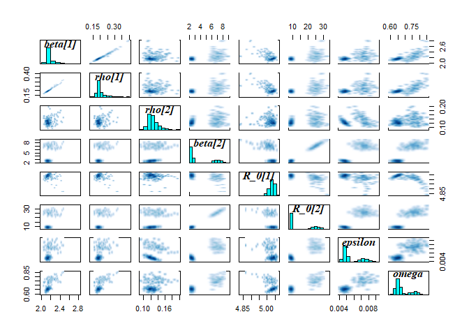
m2_EU1_diag
## $`markov chain trace plots`
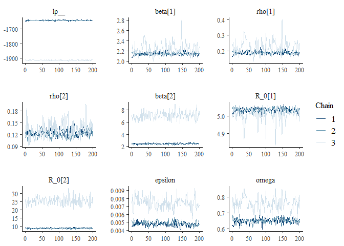
##
## $`univariate marginal posterior distributions`
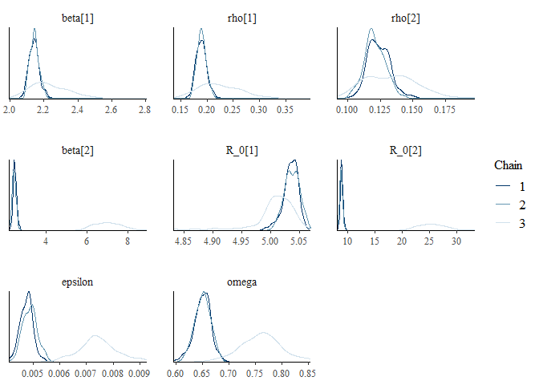
##
## $`summary statistics of parameters`
## mean se_mean sd 2.5% 25%
## beta[1] 2.174278594 0.032742915 0.086212251 2.076230820 2.126329648
## rho[1] 0.201609983 0.012991698 0.030939623 0.167216827 0.184687568
## rho[2] 0.126246817 0.003388824 0.014708580 0.103874931 0.116838378
## beta[2] 3.971081625 1.781548465 2.210453651 2.271054659 2.402496851
## R_0[1] 5.026515710 0.010703291 0.027965750 4.957186757 5.017956338
## R_0[2] 14.417304447 6.391065805 7.932560673 8.433757470 8.816767533
## epsilon 0.005681398 0.001027253 0.001328556 0.004372203 0.004714769
## omega 0.686398775 0.043428414 0.058106890 0.620262206 0.645499375
## 50% 75% 97.5% n_eff Rhat
## beta[1] 2.150393516 2.187886913 2.404599547 6.932714 1.195066
## rho[1] 0.192530698 0.205612432 0.285419766 5.671503 1.235327
## rho[2] 0.123385478 0.132640129 0.163287402 18.838378 1.102571
## beta[2] 2.491639868 6.536477611 8.006769192 1.539457 6.311293
## R_0[1] 5.031984652 5.042884379 5.058545954 6.826817 1.173300
## R_0[2] 9.071625754 23.593396160 28.833707087 1.540566 6.206673
## epsilon 0.004959327 0.007003534 0.008489794 1.672649 3.119356
## omega 0.660125727 0.732646287 0.815256899 1.790224 2.430118
The warnings and diagnostic plots all show the model has failed to converge. Looking at the trace plot, it seems the model is converging on the parameters specific to Delta. Conversely, for the parameters relating to Omicron, the model is exploring two different regions of the posterior distribution.
To help diagnose the problem, we can look at the lp (the log posterior) to try and understand whether the chains are exploring parameter values that are equally likely. Note, that as the lp_ is the log density up to a constant, it is not the same as the log likelihood and should not be used to compare models, as the constant from different models are likely to be different. Therefore, the is only useful as a rough indicator for comparing the log posterior of chains within the same model.
If a model is non-identifiable it means that two values of a parameter are equally likely, for instance because there are two modes in the posterior distribution. In this instance, we would expect to see chains exploring different regions of parameter space and obtaining similar estimates of the log posterior. Conversely, if we see that chains are exploring different parameter values with different log probabilities it suggests one or more of the chains may be stuck in a local mode.
Q3: Looking at the trace plots, do you think the model is non-identifiable or that one or more of the chains are stuck in a local mode?
If we plot the model fit against the data, we can see that the model is able to recreate the Delta incidence but only partly captures the Omicron transmission dynamics:
plot_model_fit_multi_var(
stan_fit_m2_EU1,
variable_model = "lambda_days",
variable_data = "rep_inc_D_noise",
data = multi_var_sim_inc[[1]])
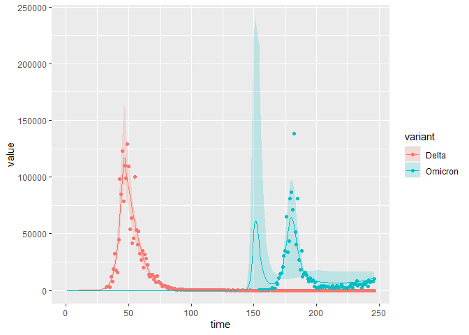 To explore this further, we can even plot the model fit for each chain separately. This allows us to confirm that the chains with a high log posterior are indeed exploring parameter values that are able to capture the transmission dynamics:
As expected, chains 1 and 2 are able to capture the transmission dynamics of Omicron, whilst chain 3 peaks too early. This makes sense, given that this chain was exploring much higher values of the Omicron .
Improving the Stan model
From the above diagnostics we can see that the model is having problems converging. One option is to run the model for more iterations, e.g, 2000 iterations with the first 1000 discarded as burn in. In this instance, the model still fails to converge (you can test this if you like, it takes ~30 minutes to run).
Alternatively, we can take failure to converge as a sign that our model needs improving. In practice it is often likely that our model is missing some key component of the data generating process. In that instance, we would need to revisit the assumptions underlying our model structure and fixed parameter values in order to extend and improve our model. However, as we simulated the data we know that this is not the case. Instead, lets revisit our parameter priors.
For , the rate that immunity wanes against Omicron, the model is exploring two models. The first is ~0.005 and the second is ~0.0075, corresponding to immunity last on average for 200 days and 130 days respectively. Based on the diagnostics we ran, we know that an average duration of immunity around 200 days is more likely. We originally assumed :
eps_prior = rnorm(100000, 0.003,0.001)
quantile(eps_prior, probs=c(0.025,0.25,0.5,0.75,0.975))
## 2.5% 25% 50% 75% 97.5%
## 0.001030631 0.002324570 0.003002029 0.003671811 0.004967465
model2_Euler_V2.stan is exactly the same as model2_Euler_V1.stan but with the updated prio. We will also increase the frequency with which we solve the ODEs from 6 times per day to 10 times per day, to improve accuracy.
stan_fit_m2_EU2 = run_stan_models(
list_data =
list(
n_var = 2, # no. variants
n_ts = length(all_dates_mv), # no. time steps
n_pop = n_pop, # population
n_recov = round(immunity_mv*n_pop), # recovered population
I0 = c(n_inf_D, n_inf_O), # Seeds
y_D = y_D, # Delta reported incidence (data to fit to)
y_O = y_O, # Omicron reported incidence (data to fit to)
n_data_D = length(y_D), # no. data
n_data_O = length(y_O), # no. data
sigma = c(sigma_D,sigma_O), # latent rates
gamma = c(gamma_D, gamma_O), # recovery rate
time_seed_O = # index to seed Omicron
which(all_dates_mv == date_seed_O),
time_fit_D =
which(all_dates_mv == date_fit_D), # index to fit Delta
time_fit_O =
which(all_dates_mv == date_fit_O), # index to fit Omicron
time_int_start = which(all_dates_mv == date_int[1]), # index to start interventions
time_int_end = which(all_dates_mv == date_int[2]), # index to end interventions
scale_time_step = 10, # amount to reduce time step,
nu = nu
),
model = m2_EU2,
n_var = 2,
model_no = 2
)
## Time difference of 19.98115 mins
m2_EU2_diag = diagnose_stan_fit(
stan_fit_m2_EU2, #
pars = c("beta[1]", "beta[2]", "rho[1]","rho[2]", "R_0[1]", "R_0[2]", "omega", "epsilon"))
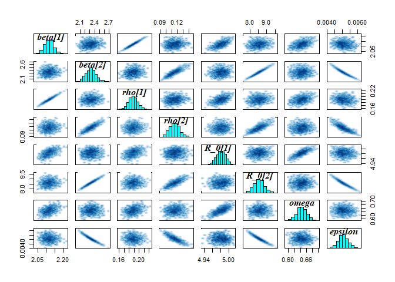
m2_EU2_diag
## $`markov chain trace plots`

##
## $`univariate marginal posterior distributions`
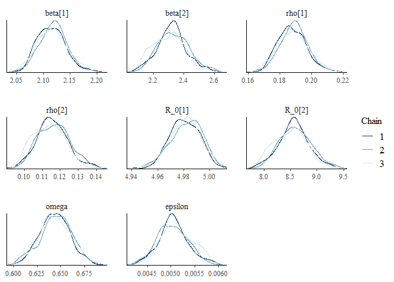
##
## $`summary statistics of parameters`
## mean se_mean sd 2.5% 25%
## beta[1] 2.116521884 9.899071e-04 0.0269706926 2.067661028 2.097787454
## beta[2] 2.319350471 5.139249e-03 0.1024861769 2.131684601 2.248085267
## rho[1] 0.188317783 3.325335e-04 0.0092349010 0.171366430 0.181847303
## rho[2] 0.115291630 4.347656e-04 0.0090079647 0.099126602 0.108939300
## R_0[1] 4.981323338 4.041932e-04 0.0119813757 4.957105925 4.973470936
## R_0[2] 8.553193796 1.482954e-02 0.3023531775 7.980951894 8.344190297
## omega 0.644320641 5.484722e-04 0.0168800694 0.610813948 0.633733466
## epsilon 0.005078499 1.653904e-05 0.0003368983 0.004422272 0.004848714
## 50% 75% 97.5% n_eff Rhat
## beta[1] 2.116432248 2.133809321 2.175968276 742.3272 1.0010011
## beta[2] 2.320265733 2.385751498 2.542435142 397.6778 1.0132085
## rho[1] 0.188335445 0.194204472 0.207661324 771.2475 1.0012060
## rho[2] 0.115026089 0.121291680 0.134161125 429.2824 1.0127609
## R_0[1] 4.981861544 4.989864744 5.003023951 878.6892 0.9997183
## R_0[2] 8.557859890 8.747650458 9.194714836 415.6939 1.0123018
## omega 0.644341053 0.655534903 0.677306322 947.1947 0.9991738
## epsilon 0.005053239 0.005293894 0.005769865 414.9321 1.0125417
The model fit is also good:
plot_model_fit_multi_var(
stan_fit_m2_EU2,
variable_model = "lambda_days",
variable_data = "rep_inc_D_noise",
data = multi_var_sim_inc[[1]])
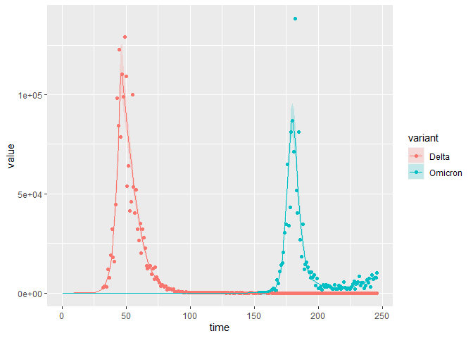
Finally, we can compare the parameter estimates to the true values:
compare_param_est(
parameter_names = c("beta[1]", "beta[2]", "rho[1]","rho[2]", "R_0[1]", "R_0[2]", "omega", "epsilon"),
true_param_values = c(beta_D, beta_O, rho_D, rho_O , R0_D, R0_O, omega, epsilon),
param_values1 = m2_EU2_diag[[3]][,c(1,4,8)],
model_names = c("EU")
)
## [[1]]
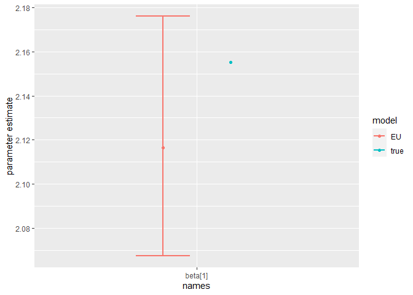
##
## [[2]]
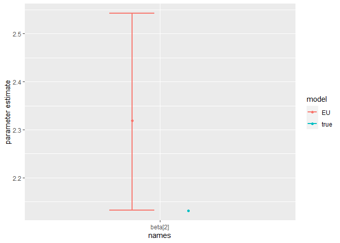
##
## [[3]]
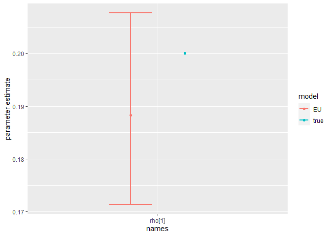
##
## [[4]]
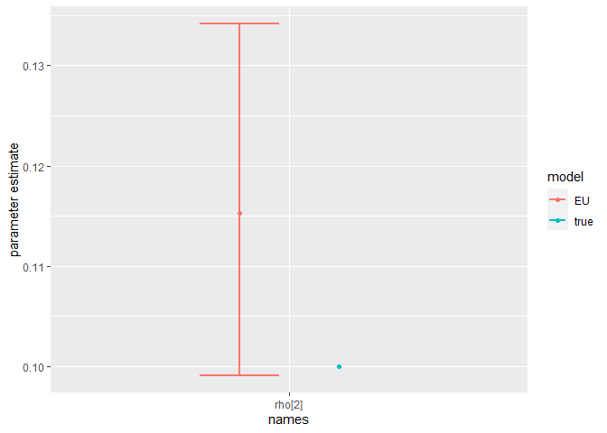
##
## [[5]]
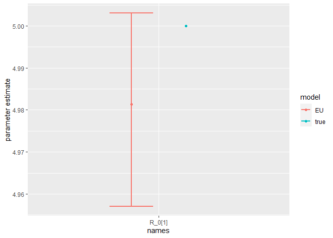
##
## [[6]]
##
## [[7]]
##
## [[8]]
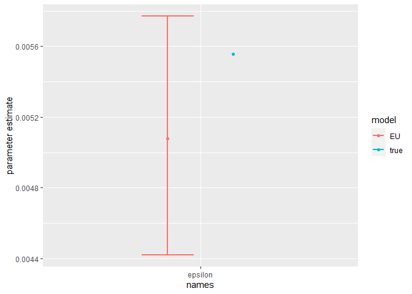
The model is broadly able to capture all the parameter values. As the is strong correlation between the parameters values, we might say they are weakly identified, as the posterior distribution mode is a ridge (see the pairs plot). Nevertheless, with sensible priors we are still able to capture the parameter values and obtain a sufficient sample size (see n_eff), indicating that results are unbiased and can be trusted.
Model extensions
Note, these extensions don't have solutions, and there isn't a single, correct way to approach them. The challanges are more open ended and are provided in case you would like to explore this topic further!
1. Parameter values, priors and likelihoods
As discussed throughout the tutorial, there are many choices to made during the model fitting process. These include which parameter values to fix and which to estimate, which priors to use and which likelihood to use.
Challenge: Refit the model Swap assuming the likelihood follows a Poisson distribution, rather than a Negative Binomial distribution
Challenge: As discussed above, there is a some non-identifiability in the model. One way to address this is fix one of the parameter values. Refit the model fixing one or more of the parameter values. How does this change the parameter estimates? Alternatively, What happens if you try estimating more parameter values? For instance, try estimating the and/or the parameters. Does the model still converge? Are the estimated parameter values less accurate?
Challenge: We have shown that our model can be sensitive to the choice of prior. We fit the model assuming improper, flat priors. Does the model still converge? Can you find a set of priors that result in divergent transitions?
2. Missing data
A common problem in epidemiological modelling is missing data. We are frequently using secondary data, which was not collected for the purposes of our study. When modelling multivariate pathogens (e.g., SARS-CoV-2, Influenza, Dengue), we often do not know what variant or serotype someone was infected with, as this is not routinely collected information. For instance, most positive COVID-19 samples are not sequenced, so we do not know which variant they are infected with. In this example, we made the simplifying assumption that only a single variant was circulating at any time. However, this is clearly incorrect. Instead, we could couple genomic surveillance data, for instance that reported in GISAID, to the reported epidemiological incidence to recreate the variant specific incidences, by assuming the variant-specific prevalence in GISAID is proportional to its reported incidence:
Where is the variant specific reported incidence, is the total reported incidence, is the number of sequences positive for variant Y and is the number of samples sequenced.
A limitation of genomic surveillance, is that it is often spatiotemporally sparse. Even for SARS-CoV-2, which has had more thorough surveillance than most other infectious diseases, there may be months for which now genomic surveillance was done. For instance, say that no genomic surveillance was undertaken in Gauteng for 1 weeks in June and October respectively. Therefore, for those time period we would have missing data for the variant-specific incidence of Delta and Omicron:
ggplot(multi_var_sim_inc_missing_data, aes(x = date,y = rep_inc_D_noise)) +
geom_line() +
geom_line(aes(y= rep_inc_O_noise), color = "red")
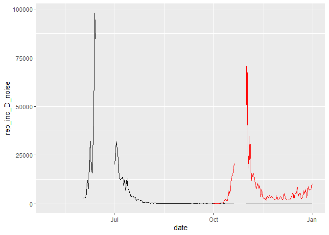
Whereas in R, we can account for missing data as "NA", in Stan missing data cannot be included. Therefore, if we want to fit the model to incidence data where date for certain dates are missing, we need to include an array where we index the dates to be fit. This is similar to seeding the model 1 month prior to fitting, we passed an index to the Stan model telling it at which time point to start fitting the model.
Challenge: Save model2_Euler_V2.stan as a new model and extend it to fit to the incidence data in multi_var_sim_inc_missing_data*, accounting for the missing data.*
3. Pre-symptomatic transmission
There is evidence that SARS-CoV-2 transmission occurs prior to the onset of symptoms [3], which we do not account for in our model.
Challenge: First draw out a compartmental model which allows for pre-symptomatic infectiousness. Assume that the average period from exposure to SARS-CoV-2 to the onset of Viraemia is fixed at 1.31 days [3] (so you do not need to estimate any additional parameters). Next, save model2_deSolve.R as a new model and extend it to include pre-symptomatic infectiousness. How does it change the transmission dynamics of the outbreak? Fianlly, save model2_Euler_V2.stan* as a new model and modify it to include pre-symptomatic infectiousness.*
References
- (1) Mutevedzi PC, Kawonga M, Kwatra G, et al. Estimated SARS-CoV-2 infection rate and fatality risk in Gauteng Province, South Africa: a population-based seroepidemiological survey. Int J Epidemiol 2022; 51(2): 404-17.
- (2) Tanaka H, Ogata T, Shibata T, et al. Shorter Incubation Period among COVID-19 Cases with the BA.1 Omicron Variant. Int J Environ Res Public Health 2022; 19(10).
- (3) Lavezzo E, Franchin E, Ciavarella C, et al. Suppression of a SARS-CoV-2 outbreak in the Italian municipality of Vo’. Nature 2020; 584(7821): 425-9.
- (4) Grant R, Charmet T, Schaeffer L, et al. Impact of SARS-CoV-2 Delta variant on incubation, transmission settings and vaccine effectiveness: Results from a nationwide case-control study in France. Lancet Reg Health Eur 2022; 13: 100278
- (5) Menni C, Valdes AM, Polidori L, et al. Symptom prevalence, duration, and risk of hospital admission in individuals infected with SARS-CoV-2 during periods of omicron and delta variant dominance: a prospective observational study from the ZOE COVID Study. Lancet 2022; 399(10335): 1618-24.